1.基础：
- 官方API先扣一遍;
2入口模板：
<!DOCTYPE html>
<html lang="zh-CN">
<head>
<meta charset="utf-8">
<meta http-equiv="X-UA-Compatible" content="IE=edge">
<meta name="viewport" content="width=device-width, initial-scale=1">
<!-- 上述3个meta标签*必须*放在最前面，任何其他内容都*必须*跟随其后！ -->
<title>Bootstrap 101 Template</title>
<!-- Bootstrap -->
<link href="css/bootstrap.min.css" rel="stylesheet">
<!-- HTML5 shim and Respond.js for IE8 support of HTML5 elements and media queries -->
<!-- WARNING: Respond.js doesn't work if you view the page via file:// -->
<!--[if lt IE 9]>
<script src="https://cdn.bootcss.com/html5shiv/3.7.3/html5shiv.min.js"></script>
<script src="https://cdn.bootcss.com/respond.js/1.4.2/respond.min.js"></script>
<![endif]-->
</head>
<body>
<h1>你好，世界！</h1>
<!-- jQuery (necessary for Bootstrap's JavaScript plugins) -->
<script src="https://cdn.bootcss.com/jquery/1.12.4/jquery.min.js"></script>
<!-- Include all compiled plugins (below), or include individual files as needed -->
<script src="js/bootstrap.min.js"></script>
</body>
</html>
- meta设置选用最新IE浏览器，设置适配浏览器的屏幕宽度，初始缩放比：

- IE浏览器的各种版本测试模式：

- 条件注释：

3.视口：
- 说明：

标签：好像所有的dom都是100%内置的，需要用栅格系统进行划分列
<header id="header"> <div class="topbar visible-md visible-lg"> <div class="container"> <div class="row"> <div class="col-md-2 text-center"> <a href="#" class="mobile-link"> <i class="icon-mobilephone"></i> <span>手机微金所</span> <i class="glyphicon glyphicon-chevron-down"></i> <img src="img/c_06.jpg" height="136" width="120" alt="扫一扫"> </a> </div> </div> </div> </div> <nav class="navbar navbar-itcast navbar-static-top"> </nav> </header>视口设置为设备的宽度。里面的页面设置为宽度为100%（body的宽度），然后响应设备的宽度进行变化，col-md-n 这个分列有相对定位。body就是那个容器，页面内设置宽度为100%，页面相应设备的宽度设置body的宽度。
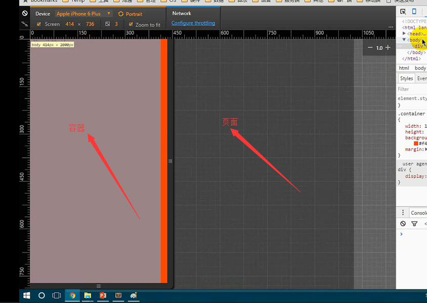
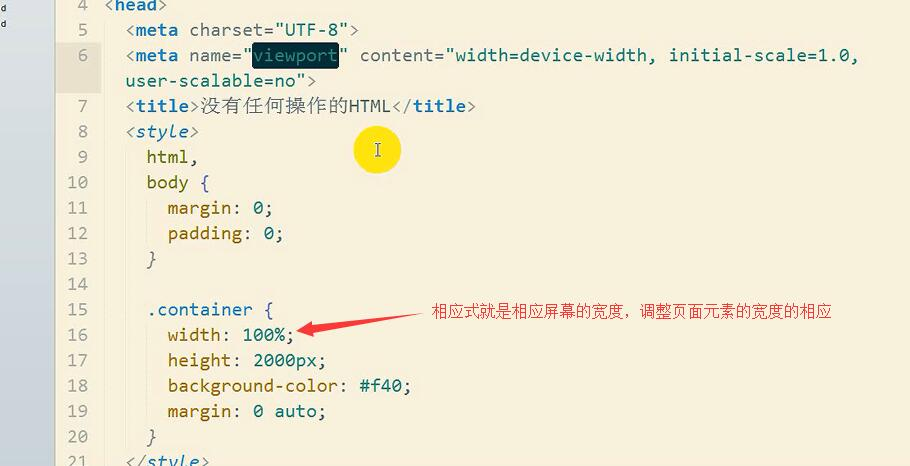
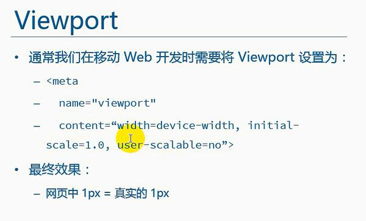
- 布局容器：版心的设置：分布的栅格系统没有设置有几列的话就自动百分百

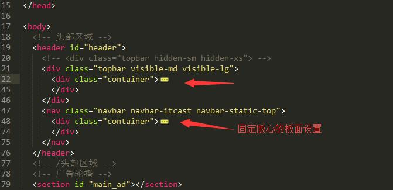
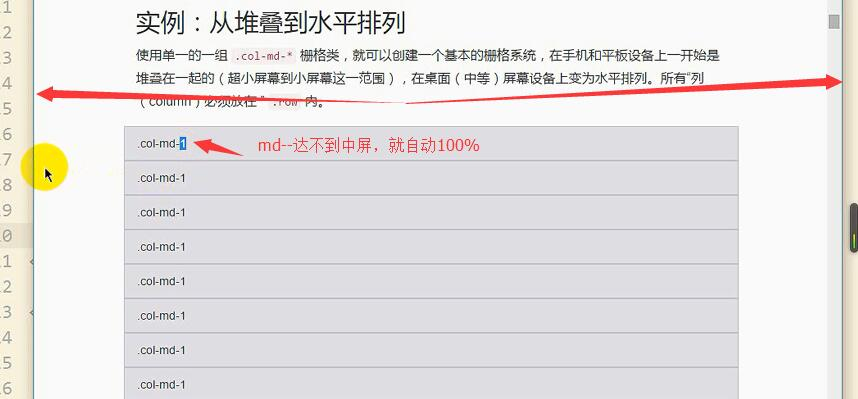
- 栅格参数：
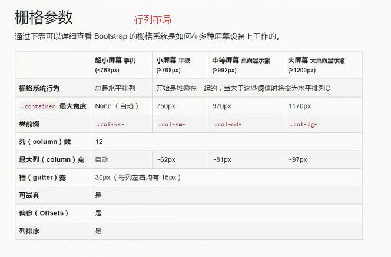
- 媒体查询：条件是最小宽度的话，写的规则是从小到大的抒写
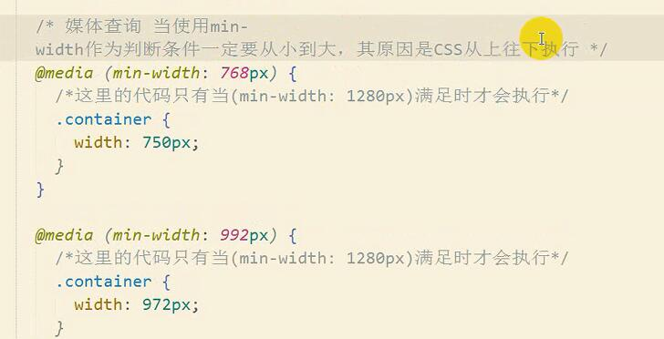
4.bootstrap文件：
- css高亮主题文件：

- 可用的类：

- 可作为按钮使用的标签

5.样式设置：
5.1公共样式与选择器：
- body：设置字体样式
body {
font-family: "Helvetica Neue", Helvetica, Microsoft Yahei, Hiragino Sans GB, WenQuanYi Micro Hei, sans-serif;
}
- margin ：0 auto;居中
- 排序选择器：
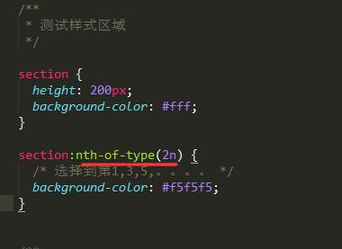
- 兄弟选择器：


- box-size:border-box。盒子的宽度就是向内压缩的。border，padding，width。三个值加起来就是总宽。
5.2 字体设置：
- 字体设置：设置字的内容还是内容设置：
@font-face {
font-family: 'itcast';
src: url('../font/MiFie-Web-Font.eot') format('embedded-opentype'),
url('../font/MiFie-Web-Font.svg') format('svg'),
url('../font/MiFie-Web-Font.ttf') format('truetype'),
url('../font/MiFie-Web-Font.woff') format('woff');
}
<!-- 通配选择器 前面是以"icon-"开头 然后包含" icon-"的类名 -->
[class^="icon-"],
[class*=" icon-"] {
font-family: itcast;
font-style: normal;
}

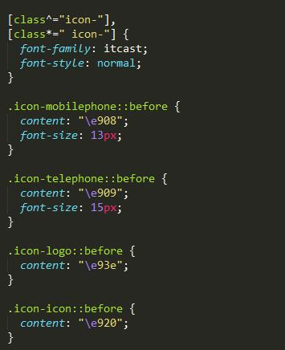
- 档字体文件：
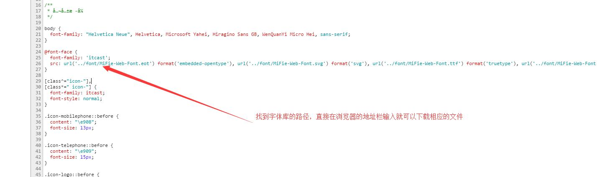
5.3 栅格系统：
- 设置好栅格系统，设置高度先撑起来：
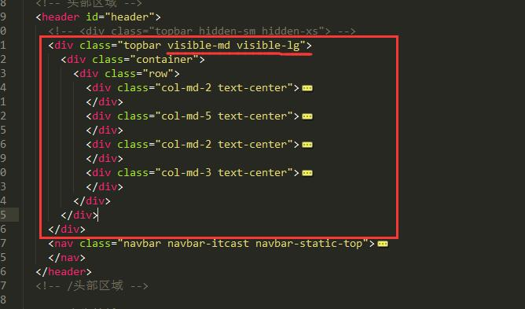
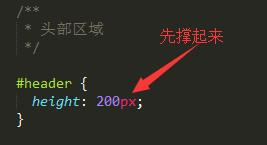
- a标签里面放入其他的标签：

- 左边固定宽度，右边自适应屏幕
- 左边设置浮动或者定位，设置固定宽度，下面的元素会上来。
- 下面设置margin-left = 固定宽度，就形成自适应了。

- 列偏移：
- col-md-offset-2 列偏移还是在12格内
- sublime 快速定位代码位置 Ctrl+R
5.4 伪类设置：
- ::before，::after 伪类设置前后的两个公用的地方
.panel-czbk > .panel-heading::before,
.panel-czbk > .panel-heading::after {
content: ' ';
width: 16px;
height: 16px;
border-radius: 8px;
background-color: #f0f0f0;
position: absolute;
}
.panel-czbk > .panel-heading::before {
top: -8px;
left: -8px;
}
.panel-czbk > .panel-heading::after {
bottom: -8px;
left: -8px;
box-shadow: 0 2px 1px #ccc inset;/*内嵌样式*/
}
5.5 空白字符：
- 一个dom100%宽。子dom之间有个换行，就是空白字符，会占有像素，所以两个子dom百分比分父亲的100%，就分不来，所以第二个dom就会换行。
<div class="container">
<div class="left"></div>
<div class="right"></div>
</div>
- css设置字体大小为0就可以了：
.container {
width: 1024px;
height: 2000px;
margin: 0 auto;
font-size: 0;
}
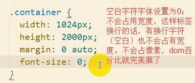
5.6 菜单栏横向滚动：
var $ulContainer = $('.nav-tabs');
// 获取所有子元素的宽度和
var width = 30; // 因为原本ul上有padding-left
// 遍历子元素
$ulContainer.children().each(function(index, element) {
width += element.clientWidth;
});
// 此时width等于所有LI的宽度总和
// 判断当前UL的宽度是否超出屏幕，如果超出就显示横向滚动条
if (width > $(window).width()) {
$ulContainer
.css('width', width)
.parent().css('overflow-x', 'scroll');
// 这个样式竟然可以横向滚动。我去。
}
5.7 em & rem：
- 一个em,代码当前标签font-size的大小。
- rem （root-em）取HTML的font-size
- bootstrap 4.0全面使用rem
5.8 左浮右浮动：
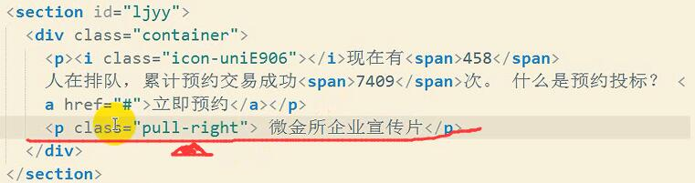
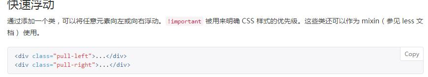
6.自定义按钮样式：BBG
- 自己生产自己的按钮样式

- 或者找源码中的代码进行复制后自己修改：
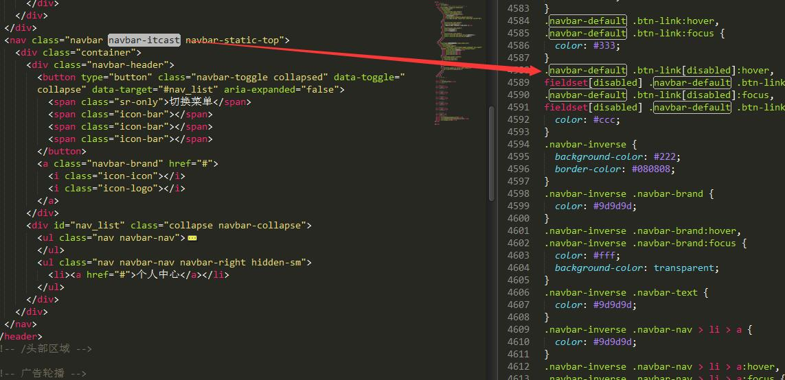
- 修改默认样式，导航条首先要知道哪个是控制样式的最大的style复制。比如navbar-inverse。接着把我们的navbar-inverse改成我们需要的比如navbar-cc-nav。接着在浏览器直接改样式，在浏览器点击改完的文件，全选，复制到我们本地样式文件。无论改哪个样式，肯定改的是本地样式

7.轮播图：
7.1 控制目标：
<!--
以下容器就是整个轮播图组件的整体，
注意该盒子必须加上 class="carousel slide" data-ride="carousel" 表示当前是一个轮播图
bootstrap.js会自动为当前元素添加图片轮播的特效
-->
<div id="轮播图的ID" class="carousel slide" data-ride="carousel">
<!-- ol标签是图片轮播的控制点 -->
<ol class="carousel-indicators">
<!--
每一个li就是一个单独的控制点
data-target属性就是指定当前控制点控制的是哪一个轮播图，其目的是如果界面上有多个轮播图，便于区分到底控制哪一个
data-slide-to属性是指当前的li元素绑定的是第几个轮播项
注意，默认必须给其中某个li加上active，展示的时候就是焦点项目
-->
<li data-target="#轮播图的ID" data-slide-to="0" class="active"></li>
<li data-target="#轮播图的ID" data-slide-to="1"></li>
<!-- ...更多的 -->
</ol>
<!--
.carousel-inner是所有轮播项的容器盒子，
注意role="listbox"代表当前div是一个列表盒子，作用就是给当前div添加一个语义
-->
<div class="carousel-inner" role="listbox">
<!-- 每一个.item就是单个轮播项目，注意默认要给第一个轮播项目加上active，表示为焦点 -->
<div class="item active">
<!-- 轮播项目中展示的图片 -->
<img src="example.jpg" alt="示例图片">
<div class="carousel-caption">
<!-- 标题或说明性文字，如果不需要，直接删除当前div.carousel-caption -->
</div>
</div>
<div class="item">
<!-- ... -->
</div>
<!-- ... -->
</div>
<!-- 图片轮播上左右两个控制按钮，分别点击可以滚动到上一张和下一张 -->
<!-- 此处需要注意的是 该a链接的href属性必须指向需要控制的轮播图ID -->
<!-- 另外a链接中的data-slide="prev"代表点击该链接会滚到上一张，如果设置为next的话则相反 -->
<a class="left carousel-control" href="#轮播图的ID" role="button" data-slide="prev">
<span class="glyphicon glyphicon-chevron-left" aria-hidden="true"></span>
<span class="sr-only">上一张</span>
</a>
<a class="right carousel-control" href="#轮播图的ID" role="button" data-slide="next">
<span class="glyphicon glyphicon-chevron-right" aria-hidden="true"></span>
<span class="sr-only">下一张</span>
</a>
</div>
- 注意可以控制轮播图的点的target设置:

- 替换自己的target

- 在一个较小屏幕的展示一个超级宽的一个图片，想让图片居中显示，可以使用背景图：
- 1--div的背景图--先设置盒子的高度，在设置背景的居中情况，显示大小覆盖情况
- 2--定位 p;a left:50%;margin-left:-width/2;
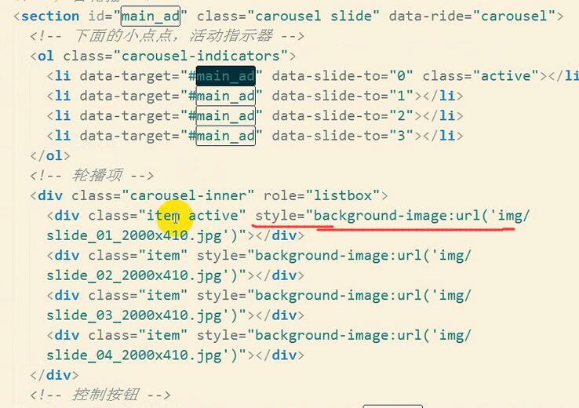


7.2 图片响应：
- 各个端需要正常显示图片
- 移动端使用小图（体积）
- 实现
- 先把两个图片的地址绑定到dom的属性上。
- JS 拿到屏幕的大小，判断是否是小屏幕，获取相应的标签，然后做相应的渲染
- css:最小大于768px,设置高度为设置的值。当满足为小屏幕时，设置为图片，图片的话就是宽度100%；高度也会跟着相应变化了。
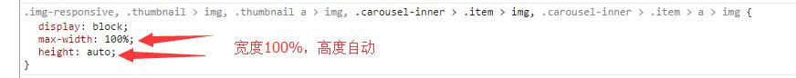
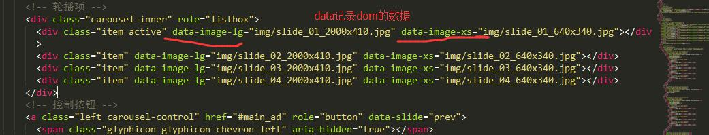
#main_ad > .carousel-inner > .item {
background-repeat: no-repeat;
background-position: center center;
background-size: cover;
}
<!-- 屏幕最小宽度大于768，就设置410高度 -->
@media (min-width: 768px) {
#main_ad > .carousel-inner > .item {
height: 410px;
}
}
<!-- 设置好图片的样式。width100%，高度auto -->
#main_ad > .carousel-inner > .item > img {
width: 100%;
}
$(window).on('resize', resize).trigger('resize');
事件委派执行。

7.3 轮播图手机端的左右滑动
// 获取界面上的轮播图容器
var $carousels = $('.carousel');
var startX, endX;
var offset = 50;
// 注册滑动事件
$carousels.on('touchstart', function(e) {
// 手指触摸开始时记录一下手指所在的坐标X
startX = e.originalEvent.touches[0].clientX;
// console.log(startX);
});
$carousels.on('touchmove', function(e) {
// 变量重复赋值
endX = e.originalEvent.touches[0].clientX;
// console.log(endX);
});
$carousels.on('touchend', function(e) {
console.log(e);
// 结束触摸一瞬间记录最后的手指所在坐标X
// 比大小
// console.log(endX);
// 控制精度
// 获取每次运动的距离，当距离大于一定值时认为是有方向变化
var distance = Math.abs(startX - endX);
if (distance > offset) {
// 有方向变化
// console.log(startX > endX ? '←' : '→');
// 2. 根据获得到的方向选择上一张或者下一张
// - $('a').click();
// - 原生的carousel方法实现 http://v3.bootcss.com/javascript/#carousel-methods
$(this).carousel(startX > endX ? 'next' : 'prev');
}
});
7.4 JS组件与CSS组件的区别
- 就是有的dom上放置了一些属性，JS判断这些属性的是否有，然后决定他们的JS相应。这么说决定他业务的一般是一个属性值。
- 所以皮肤就是css,业务才是JS，两者没有关系。

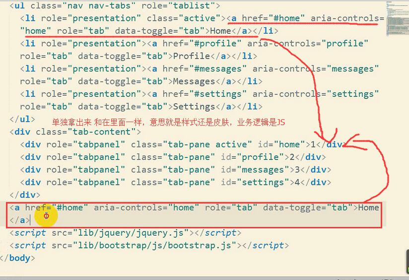
8.吸顶设置：affix
- data-spy="affix" data-offset-top="40" 往下拉超过多少开始吸顶
- data-offset-bottom="200"
9.模态框
- 特别注意：把需要的东西放在modal-body里面
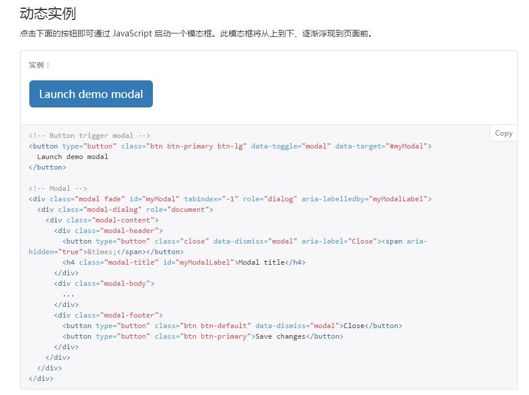
10.table栏
- 目标控制：

- 渐入渐出：

11.预处理得的less
- 和JS一样有去全局变量。全局函数（MixIn）
- 有嵌套的语法
- 使用：
- //这个注释会转换完成后会被删除
- 定义变量：@mianColor:#e45445; 不用写引号
@mianColor:#e45445;
.container {
width: 1000px;
background-color: #ff0;
.row {
height: @width;
div {
border-left: 1px solid @mainColor;
> a { //直接子代这样加
color: red;
&:hover { //注意这里伪类这样加
color: green;
}
}
}
}
}
- MixIn--定义个代码段
// 定义一个代码段，（）里的内容是参数，参数中:后的内容是参数的默认值（没有传参数）
.roundedCorners(@radius: 5px) {
-moz-border-radius: @radius;
-webkit-border-radius: @radius;
border-radius: @radius;
}
/* 定义的类应用到另个一个类中 */
#header {
.roundedCorners();
}
#footer {
.roundedCorners(10px);
}
- 导入文件.less
@h: 100px;
@import url('_p.less');
//_p.less
p {
line-height: @h;
}
- 内置函数
- lighten：将一个颜色变亮
- lighten(#000, 10%); // #1a1a1a
- darken：将一个颜色变暗
- darken(#000, 10%); // #e6e6e6
- lighten：将一个颜色变亮
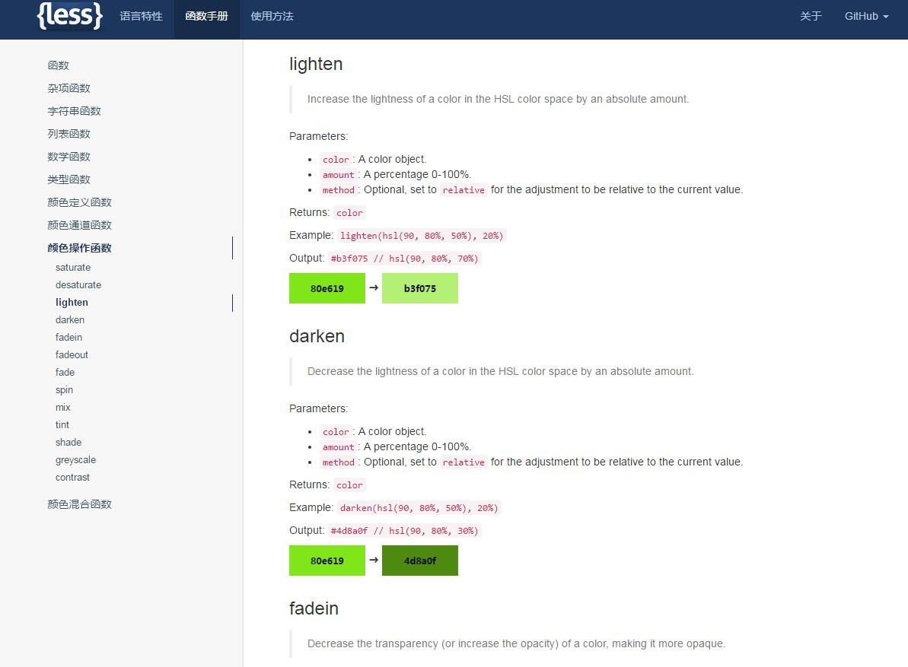
- sunlime less高亮插件 less2css
11.谷歌的微调工具
- 添加到工作空间：

- 链接到映射：

- 微调开始：
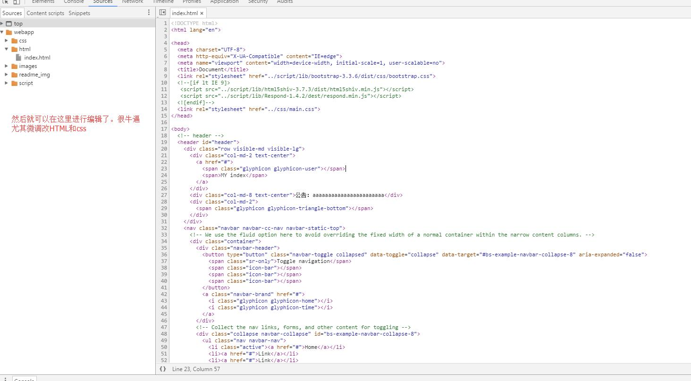
- 在文件里设置好：

- 退出工作空间：
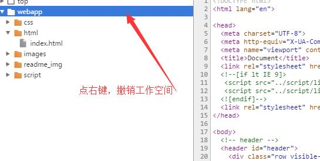
12.自定义bootstrap
- 修改栅格系统：
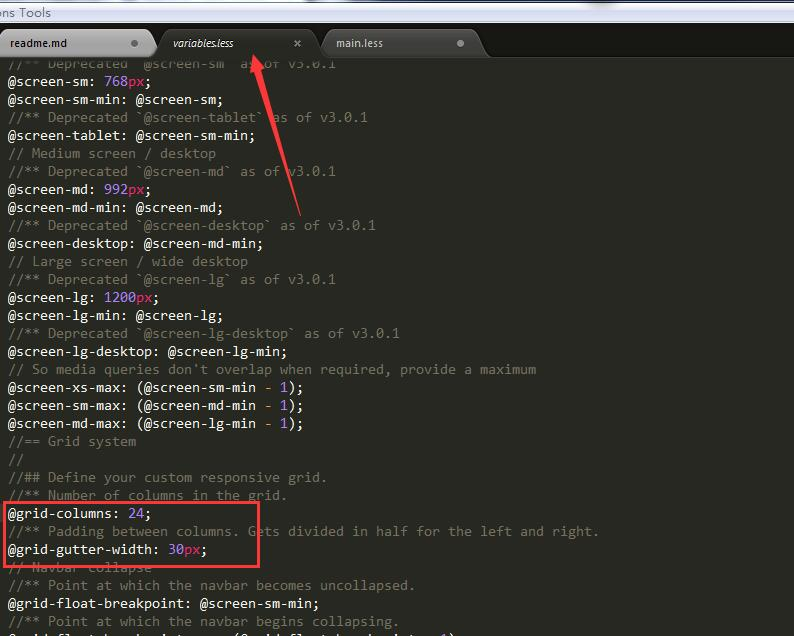
- 定制：